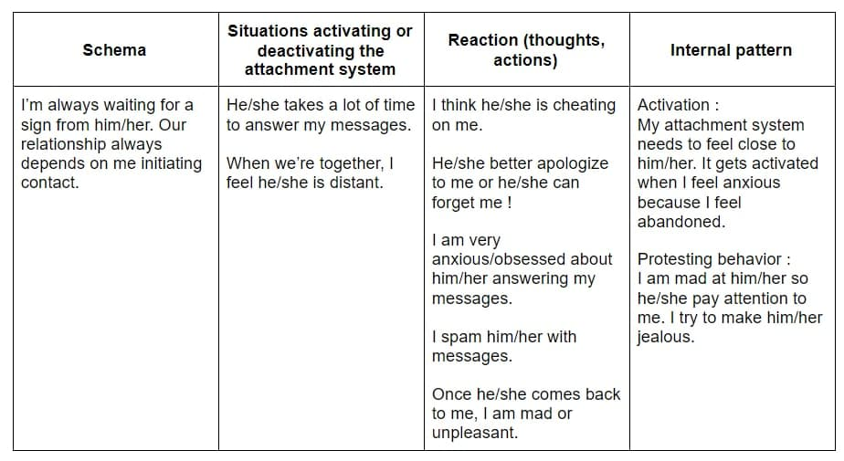

Thought it's easier this way. If you don't really wanna bother, I und that and you can leave.
I'm sorry for making your life hard sometimes. Some things are becoming clearer to me and I wanna let you know what's up.
Firstly, you probably already know that, but it's not your fault when I get sad or angry most times for no reason.
The problem is from me and from the way I function and interpret the world.
This is the kind of shit my mind gets through (click on it) :
I am not 100% like this (thank god, right?) and I got better since I'm with you (for sure you noticed at least a little improvment ?)
But I see now that I really need to work on that, both for you and for myself, cause I really can't live like this.
I promise you I'll try hard, I already started, to be more rational in my reactions.
Thank you for all the patience you've had with me. I truly know it can be hard for you to know how to deal with me.
I really know you love me, because no one else would have accepted all I put you through. I just need to tell my overthinking brain to shut up.
Sorry for all. May God help me and help us.
I love you 💕